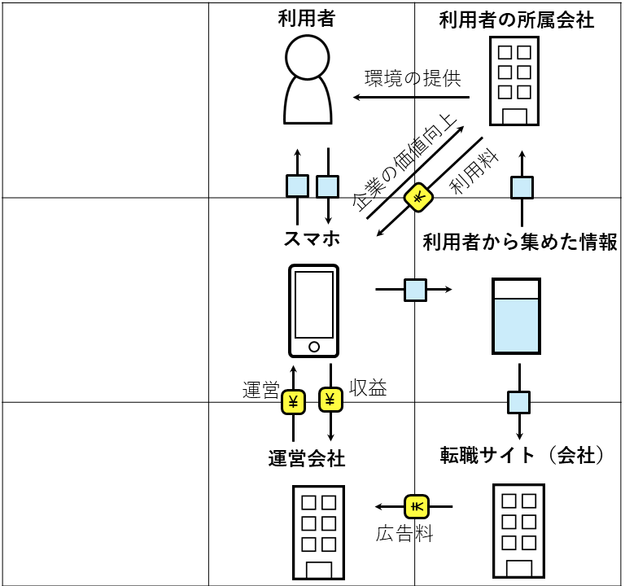

第二回
ビジネスモデル
職場環境の改善と気軽に転職できる環境を提供するサービス。
サービス自体は企業に提供する形であり、このサービスを利用する企業の社員には、定期的に労働環境への満足度や、仕事に対する様々なアンケートを実施する。
アンケートを元に分析したデータを企業に提供することで、企業は社員それぞれに対してより良い労働環境を提供することができる。
それにより、社員のパフォーマンスの向上を目指す。
労働環境の改善の実績が集まれば、いずれはこのサービスを利用している企業＝労働環境の改善に努めている、という企業の価値向上に繋がるだろう。
また、転職サイトの広告を載せることで、労働環境への悩みがある時の選択手段としての転職をアピールし、転職に対して柔軟に考えられる場を提供。
収入源は企業の利用料と転職サイト・人材会社の広告料。
転職サイトは、「転職しよう」と考えた時に初めて利用するものだが、転職について考えているいない関係なく、
自分のキャリアの選択肢や労働環境を見直す場を気軽に見ることができるスマホのアプリという形で提供したいと考えた。
ただ、現状では企業にはただアンケートとその結果を提供しているだけにすぎないので、カウンセラー等によるサポートや、
調査結果を企業がどう使うかまでをサポートできる仕組みも作る必要があるかもしれない。
